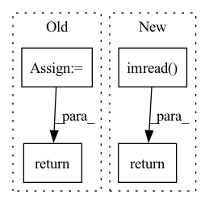

Pattern ID :14869

Before Change
def default_loader(path):
pil_image = Image.open(path).convert("RGB")
return cv2.cvtColor(np.array(pil_image), cv2.COLOR_RGB2BGR)
def disparity_loader(path):
After Change
def default_loader(path):
return cv2.imread(path, 1)
def disparity_loader(path):
return np.load(path).astype(np.float32)
In pattern: SUPERPATTERN
Frequency: 4
Non-data size: 4
Instances
Fragment ID: 49383824
Project Name: amrelsersy/stereo-3d-detection
Commit Name: aac4289bc271ac2e9899f87b91f8083473708c59
Time: 2021-05-27
Author: mamoanwar97@gmail.com
File Name: Models/AnyNet/dataloader/KITTILoader3D.py
M Class Name: AnonimousClass
N Class Name: AnonimousClass
M Method Name: default_loader(1)
N Method Name: default_loader(1)
M Parent Class:
N Parent Class:
M File Name: Models/AnyNet/dataloader/KITTILoader3D.py
N File Name: Models/AnyNet/dataloader/KITTILoader3D.py
M Start Line: 22
M End Line: 23
N Start Line: 22
N End Line: 22
'>
Before Change
elif size is not None:
img = img.resize((size, size), Image.ANTIALIAS)
elif scale is not None:
img = img.resize((int(img.size[0] / scale), int(img.size[1] / scale)), Image.ANTIALIAS)
return img if return_pil else np.array(img)
def prepare_img(img_path, new_width, device):
After Change
def load_image(img_path, width=None):
img = sio.imread(img_path).astype(np.float32)
if img.shape[2] == 4: // remove alpha channel
img = img[:, :, :3]
img /= 255.0 // get to [0, 1] range
if width is not None and width != -1:
ratio = width / img.shape[0]
height = int(img.shape[1] * ratio)
img = resize(img, (width, height), anti_aliasing=True)
return img
def prepare_img(img_path, new_width, device):
'>
Fragment ID: 49383827
Project Name: gordicaleksa/pytorch-neural-style-transfer
Commit Name: 6856e5796971c3fb5e77c0a798b35e6e106b5bcb
Time: 2020-03-30
Author: gordicaleksa@gmail.com
File Name: utils/utils.py
M Class Name: AnonimousClass
N Class Name: AnonimousClass
M Method Name: load_image(2)
N Method Name: load_image(5)
M Parent Class:
N Parent Class:
M File Name: utils/utils.py
N File Name: utils/utils.py
M Start Line: 12
M End Line: 22
N Start Line: 18
N End Line: 27
'>
Before Change
return any(filename.endswith(extension) for extension in IMG_EXTENSIONS)
def default_loader(path):
pil_image = Image.open(path)
dataL = np.ascontiguousarray(pil_image, dtype=np.float32)/256
return dataL
def disparity_loader(path):
return Image.open(path)
After Change
return dataL
def default_loader(path):
return cv2.imread(path, 1)
device = torch.device("cuda" if torch.cuda.is_available() else "cpu")
class myImageFloder(data.Dataset):
'>
Fragment ID: 49383831
Project Name: amrelsersy/stereo-3d-detection
Commit Name: 64c629eda53e17bf6b7fad881c3da45f49489c8a
Time: 2021-05-30
Author: mamoanwar97@gmail.com
File Name: Models/AnyNet/dataloader/KITTILoader.py
M Class Name: AnonimousClass
N Class Name: AnonimousClass
M Method Name: default_loader(1)
N Method Name: default_loader(1)
M Parent Class:
N Parent Class:
M File Name: Models/AnyNet/dataloader/KITTILoader.py
N File Name: Models/AnyNet/dataloader/KITTILoader.py
M Start Line: 21
M End Line: 23
N Start Line: 26
N End Line: 26
'>
Before Change
return
def __getitem__(self, idx):
return
def __len__(self):
return
After Change
def __getitem__(self, idx):
file_path = self.file_paths[idx]
file_id = self.file_IDs[idx]
file_label = self.file_labels[idx]
return torch_loader(cv2.imread(file_path)), file_path, file_id, file_label
def __len__(self):
return len(self.file_paths)
'>
Fragment ID: 49383823
Project Name: leoluopy/groupfacepytorch
Commit Name: 3b23b0c09bd22ac2e9932de5646c77701fa31ed4
Time: 2020-11-25
Author: lpy1990fff
File Name: system/data_loader.py
M Class Name: IDDataSet
N Class Name: IDDataSet
M Method Name: __getitem__(2)
N Method Name: __getitem__(2)
M Parent Class:
N Parent Class:
M File Name: system/data_loader.py
N File Name: system/data_loader.py
M Start Line: 60
M End Line: 60
N Start Line: 62
N End Line: 65